Selected 3D portfolio · 2025
Characters, objects and worlds with a lived-in story.
Modeling, sculpting, texturing, procedural animation, real-time rendering and compositing.
Explore the work01 / Environment
Soviet Kitchen
A nostalgic, tightly packed kitchen built from memories of Soviet-style homes and objects from my grandmother’s kitchen.
- Focus
- Environment modeling, texturing, lighting
- Tools
- Maya, Substance Painter, Unreal Engine
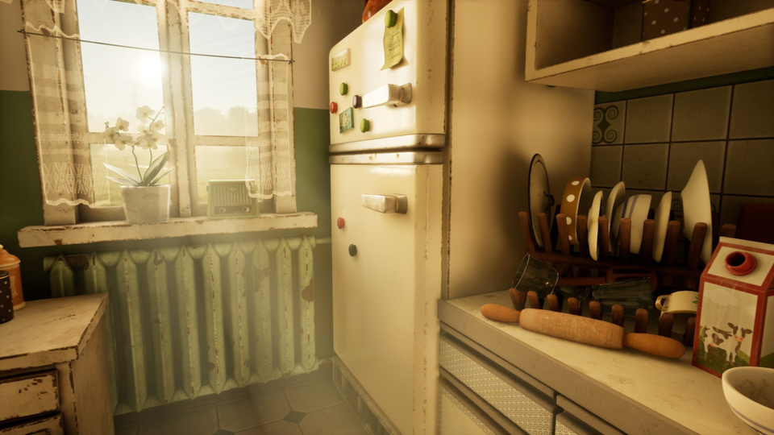
From memory to environment
The composition reflects the cramped but functional planning of a Soviet kitchen. A small table, cabinets and gas stove define the room, while previously modeled family objects create a personal, lived-in atmosphere.
Surface and light
Consistent texel density was organized across the room, furniture and small props. In Substance Painter, peeling paint, worn metal and a floral plastic tablecloth were built from real references. Separate Unreal Engine lighting setups create warm daytime and darker night moods.
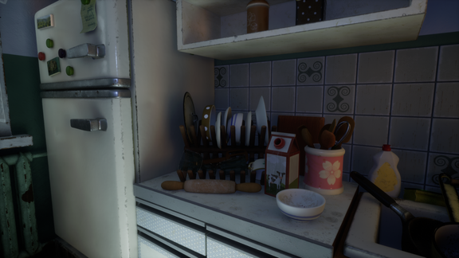
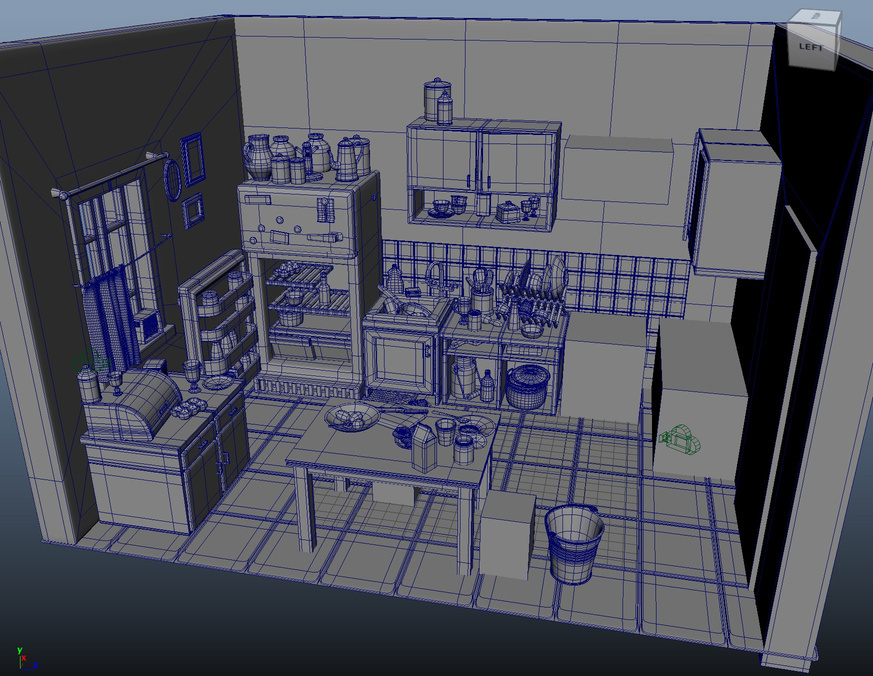
02 / Prop
Sewing Machine
A detailed Jones sewing machine created as a tribute to my mother and grandmother, both skilled at sewing.
- Focus
- Hard-surface modeling, detailed texturing
- Tools
- Maya, Substance Painter, Photoshop
Mechanical detail
The wheel, needle, levers and small mechanisms were modeled for accuracy. Curves and deformers helped shape elements such as the spring and hook while keeping the silhouette clean.
Ornament and wear
Custom alpha maps made in Photoshop were stamped into the material to recreate the gold ornament. Scratches, imperfections and signs of use give the object a convincing vintage character without overwhelming its craftsmanship.
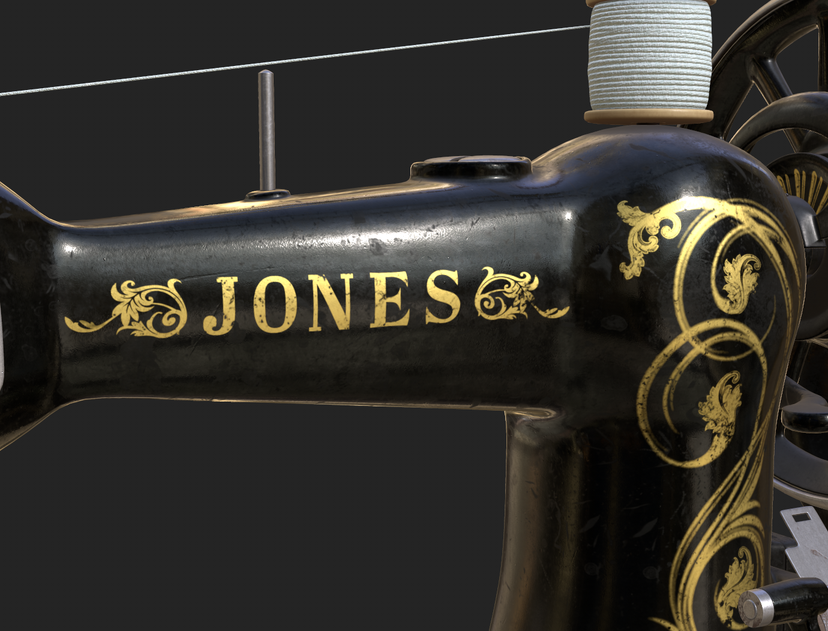
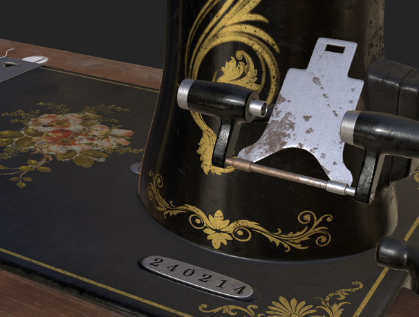
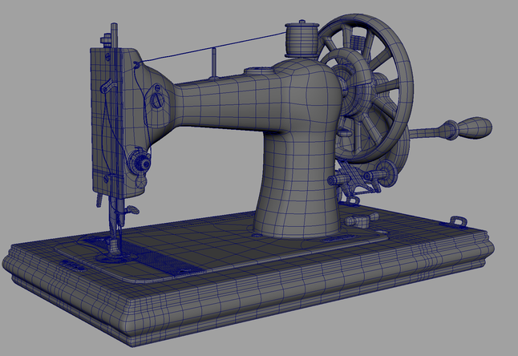
03 / Character
Grandma
A warm, stylized character inspired by my own grandmother and the traditional clothing, colors and familiar gestures I grew up around.
- Focus
- Character design, sculpting, retopology, look development
- Tools
- ZBrush, Substance Painter, Advanced Skeleton, Unreal Engine
Shape and personality
Round, soft forms make the character welcoming, while exaggerated cheeks, glasses and nose strengthen her expression. The headscarf, apron and warm, earthy palette draw on Lithuanian visual references and family memory.
Animation-ready finish
The ZBrush sculpt was retopologized with clean edge flow around the face and joints. After rigging with Advanced Skeleton, skin subsurface scattering and worn fabric materials were refined in Unreal Engine for the final posed renders.
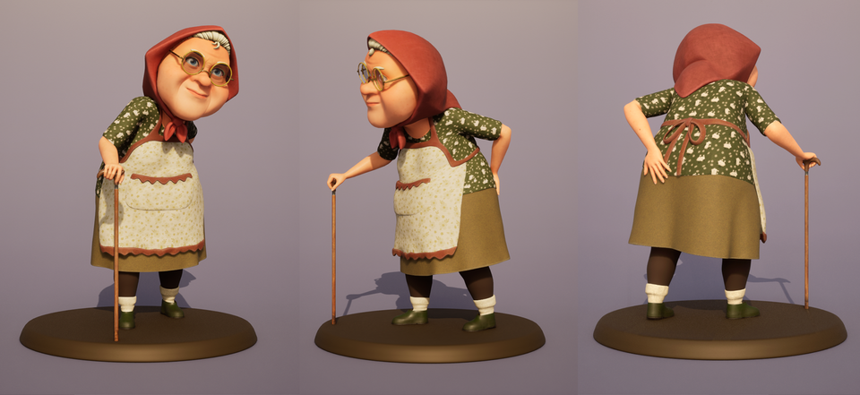
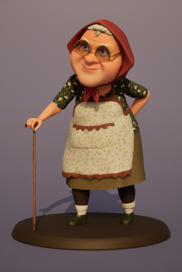
04 / Procedural
Flowers
Procedurally modeled and animated flowers exploring organic motion, controlled variation and a soft blooming cycle.
- Focus
- Procedural modeling, rigging, Vellum simulation
- Tools
- Houdini, Karma
A reusable petal system
A resampled line and custom swept profile form each petal. Bend controls, remeshing and UV transfer keep the geometry clean, while a joint-based rig drives opening and bending across petals arranged with phyllotaxis math.
Motion and rendering
Vellum adds a subtle wind response while pinned petal bases retain the flower structure. Custom noise, gradients and displacement introduce surface variation, and the final scene is lit with an HDRI and rendered in Karma.
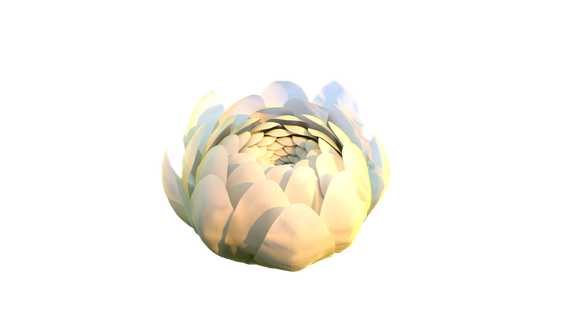
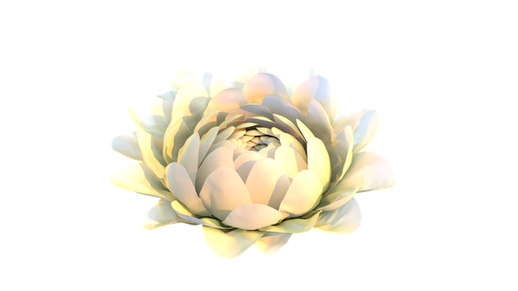
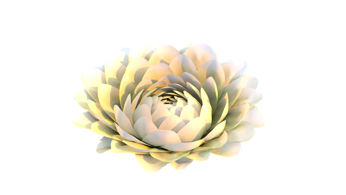
05 / Compositing
CG Interior Design
A compositing study integrating selected 3D props into live-action footage of an empty living room.
- Focus
- Camera tracking, lighting, rendering, compositing
- Tools
- Nuke X, Maya · source assets from Poly Haven
Match the room
The footage was camera-tracked in Nuke X, then a simplified room was built in Maya as shadow-catching geometry. An HDRI and directional light were matched to the window light so the inserted objects sit naturally in the scene.
Controlled composite
Multi-channel EXRs separated diffuse, specular, transmission and Cryptomatte passes for precise adjustments. Reflections, color corrections and subtle tracked steam and flame elements were combined to finish the integration.
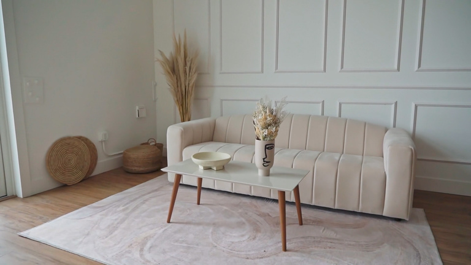
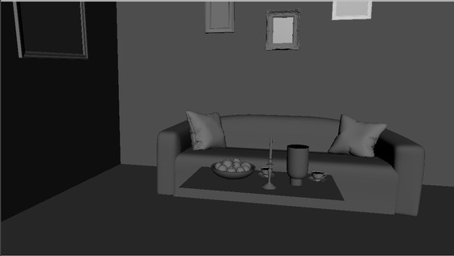
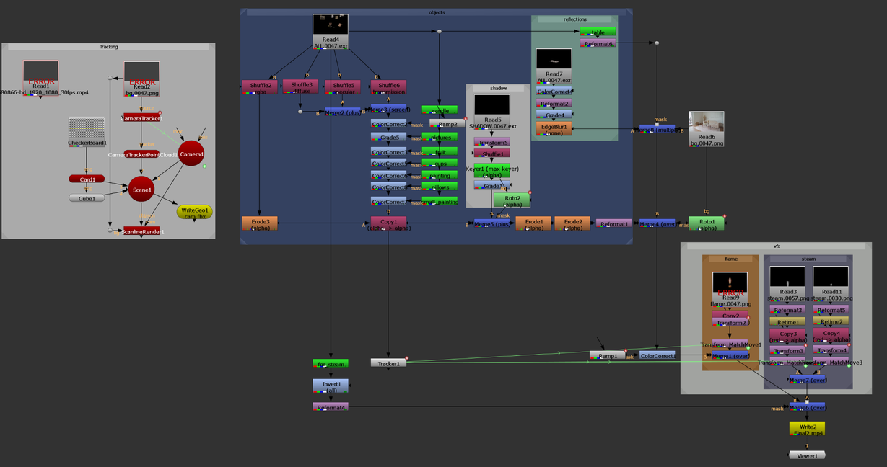